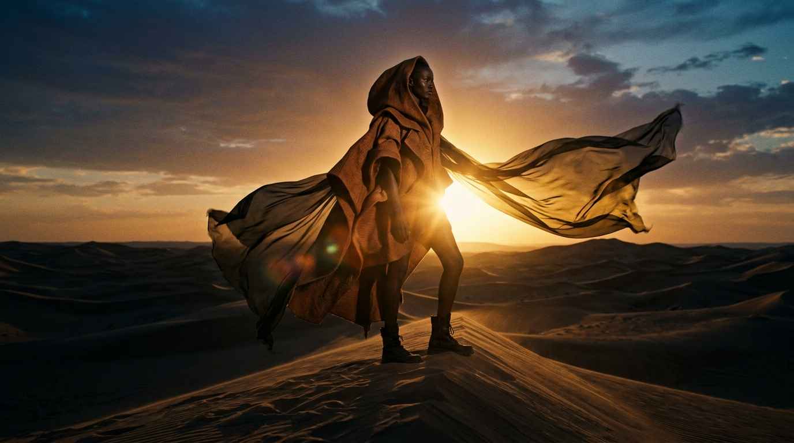

✦ CLICK TO UNMUTE PROCEDURAL SOUNDSCAPE
← RETURN TO EDITORIAL
DUNE / BRAND REEL 2026
SCENE 01 / ORIGIN
60.0 FPS
00:00:00
LAT: 24°48'14"N LON: 12°15'09"E // ALT: 412M
DUNE
People who move like weather.
05:00 AM · FIRST QUIET LIGHT
01 // TERRA

02 // SILK & WIND
03 // HORIZON

THE FOUR HOURS OF SAND
ONE PALETTE.
Pure Earth.
Dune is tailored from unhurried shapes borrowed directly from the desert at four distinct hours: pale dawn light, noon warmth, copper dusk, and deep cocoa night.
DAWN#E3C5A4
NOON#C4864F
DUSK#7A3F22
NIGHT#2A130B

Свобода быть собой.
Freedom to be yourself.
DUNE
Spring / Summer 2026 Collection
UNHURRIED SHAPES
✦
LOOSE LINES
✦
RAW FIBER
00.00s / 15.00s